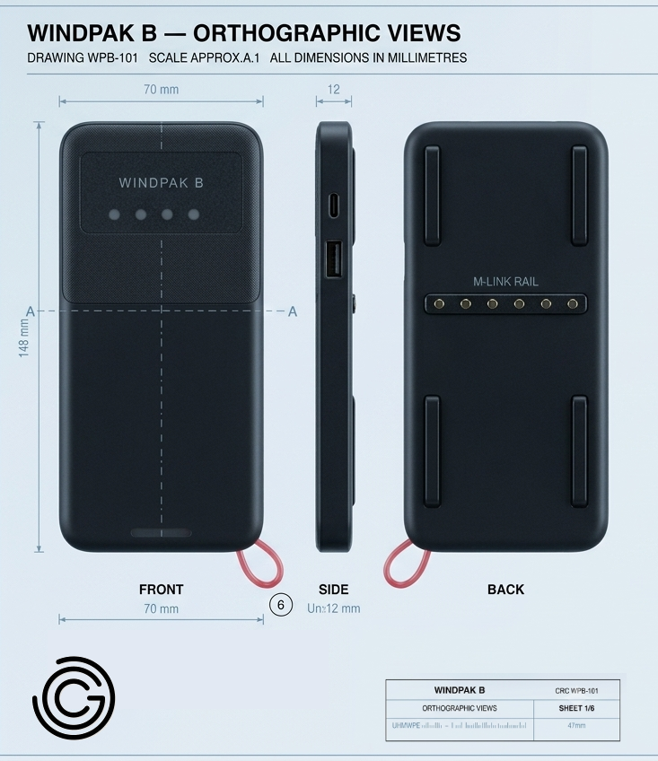

Cyber Grains · Systems Era
We are evolving from a software company into a systems company—designing applied intelligence that connects digital capability with real-world execution.

System prototype artifact · Orthographic engineering study
AI shifted the landscape
Software advantages have compressed. Intelligence is now abundant.Systems are the new moat
Value is moving from tools → infrastructure → execution layers.Real world lag
Physical industries are still disconnected from digital capability.AI systems that support decision-making in agriculture, logistics, and resource allocation.
Systems that improve efficiency, traceability, and resilience across supply chains.
Bridging software intelligence with real-world execution systems.
Technology must produce measurable real-world impact.
Economic productivity · Environmental resilience · Social mobility
AI acceleration
Intelligence is now cheap, scalable, and embedded everywhere.Infrastructure gap
Real-world systems are still inefficient and under-digitized.Sustainability pressure
Efficiency is now a requirement, not a choice.